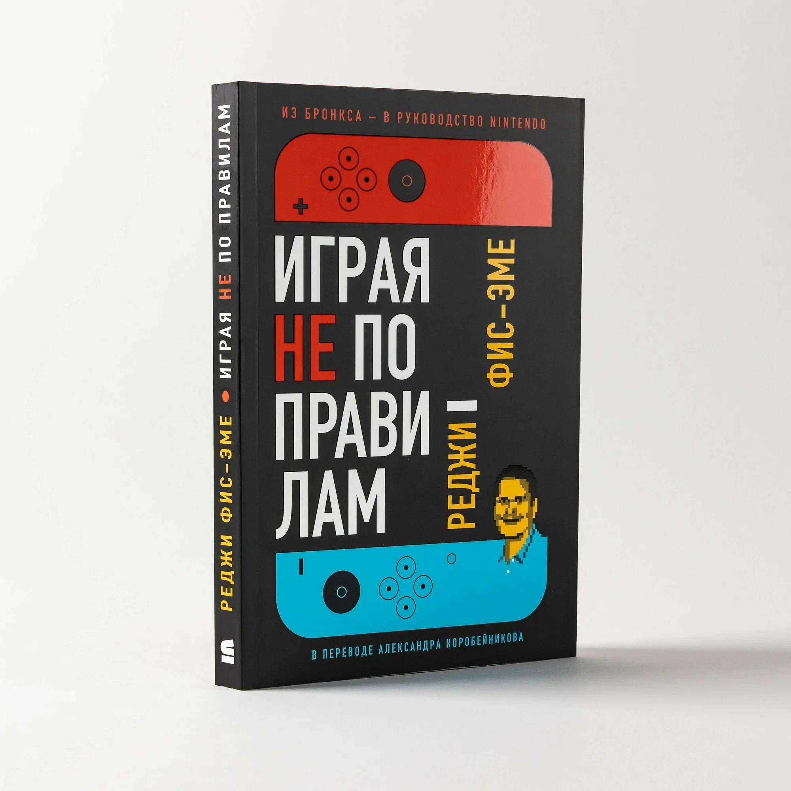

О книге
«Играя не по правилам» — книга Реджинальда Фис-Эме, президента экс-президента Nintendo of America. В книге рассказывается о честной истории успеха. Автор рассказывает не только о грандиозных свершениях, но и о не менее грандиозных провалах.
В конце книге приведен список терминов сокращений:
- Nintendo of America (NOA)
- — американский филиал компании Nintendo.
- Nintendo Co., Ltd(NCL)
- — центральная штаб-квартира Nintendo в Японии.
- Super Nintendo Entertainment System (SNES)
- — шестнадцатибитная игровая приставка от компании Nintendo, вышедшая на западном рынке в 1991 году.
- Game Developers Conference (GDC)
- — крупнейшая международная конференция разработчиков видеоигр, проводится ежегодно на территории одной из стран-участниц.
| Пункт1 | Пункт2 | Пункт3 | Пункт4 |
|---|---|---|---|
| 1 | 2 | 3 | 4 |
| 1 | 2 | 3 | 4 |
| 1 | 2 | 3 | 4 |
| 1 | 2 | 3 | 4 |
| 1 | 2 | 3 | 4 |